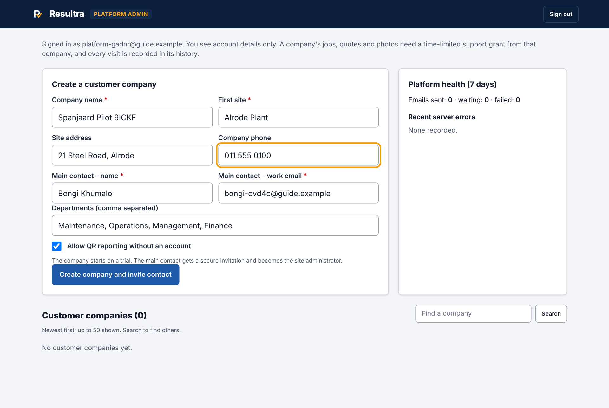
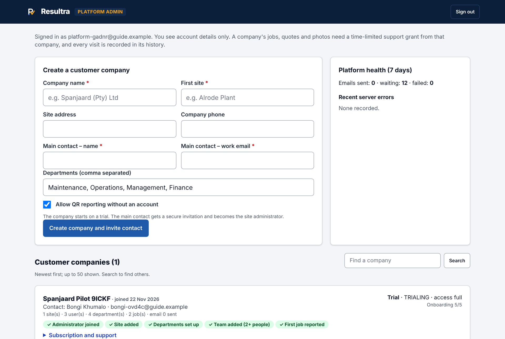
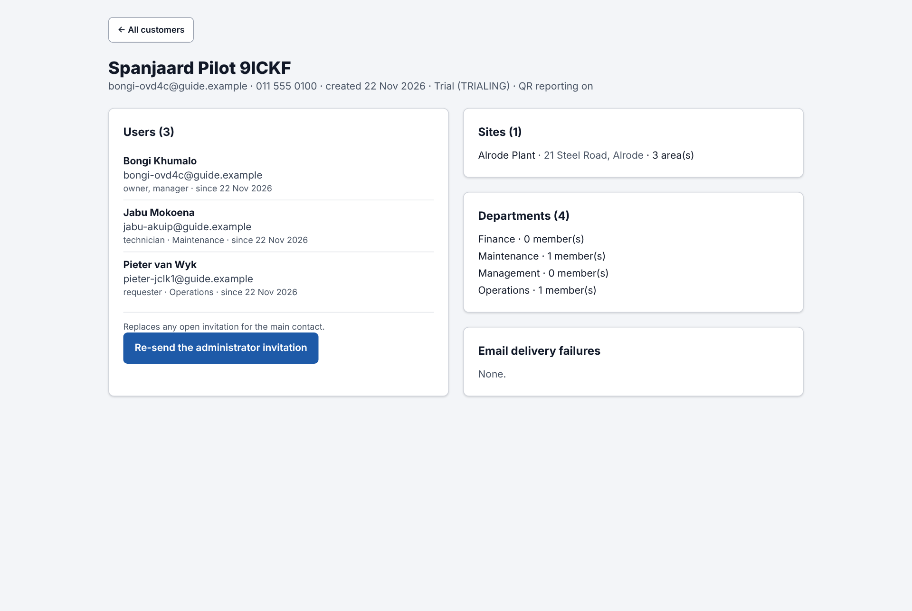

Screenshots are taken from the running application with synthetic sample data. Version of 2026-11-22.
1. Signing in
The platform owner account is created on the server with PLATFORM_ADMIN_EMAIL=… PLATFORM_ADMIN_PASSWORD=… npm run db:seed. Sign in at /login: you land on Platform admin (/platform).
2. Creating a customer company
Fill in Create a customer company: company name, first site and address, phone, the main contact's name and work email, the starting departments, and whether QR reporting without an account is on.
Create company and invite contact. The company starts on a trial with the site (with QR codes) and departments ready.
The main contact receives a secure invitation (you can also copy the link shown). Accepting it makes them the site administrator.

Creating a customer company
3. Customer overview
Each company shows its main contact (and whether the invitation was accepted), sites, users, people waiting for approval, departments, jobs, email delivery, subscription and an onboarding checklist (administrator joined, site, departments, team, first job). Search finds a company by name.

Platform admin
4. Customer profile
Open a company to see its users (roles, status, departments, email confirmed), sites, departments and email delivery failures. Re-send the administrator invitation if it expired. This is account information only: jobs, quotes, photos and reports are never shown here.

Customer profile
5. Subscriptions and account status
Under Subscription and support set the plan, status (trial, active, past due, suspended, cancelled) and dates. Suspended or expired accounts become read-only: customers keep access to their records and exports.
6. Authorised support access
There is no other way to see a company's business data.
The customer's administrator grants support access in their Settings (reason and 4, 24 or 72 hours).
Open read-only support session (recorded) appears for that company.
The visit is written to the company's history; you cannot change anything; access ends when the grant expires or is revoked.
7. Platform health
Platform health shows emails sent, waiting and failed over the last 7 days (recipient and error for failures), and recent unexpected server errors (message and page, no personal data). Check it daily during the pilot.
8. Demo and pilot companies
Demo: any user can open a separate demo workspace with sample data and switch roles with View as; demo companies never send email and can be reset.
Pilot: create a normal customer company for the pilot customer (or a separate staging deployment); testers register with a code and are approved by the pilot's administrator.